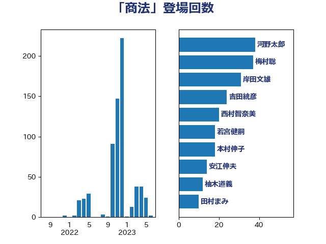

単語「商法」

| 井上信治 | 自由民主党 | 81 回 |
| 福島みずほ | 社会民主党 | 60 回 |
| 柳ヶ瀬裕文 | 日本維新の会 | 59 回 |
| 古屋範子 | 公明党 | 33 回 |
| 柚木道義 | 立憲民主党 | 24 回 |
| 安江伸夫 | 公明党 | 22 回 |
| 川田龍平 | 立憲民主党 | 22 回 |
| 大西健介 | 立憲民主党 | 18 回 |
| 牧原秀樹 | 自由民主党 | 18 回 |
| 若宮健嗣 | 自由民主党 | 17 回 |
| 伊藤孝江 | 公明党 | 13 回 |
| 岸真紀子 | 立憲民主党 | 13 回 |
| 吉田統彦 | 立憲民主党 | 12 回 |
| 串田誠一 | 日本維新の会 | 6 回 |
| 伊藤孝恵 | 国民民主党 | 6 回 |
| 武村展英 | 自由民主党 | 6 回 |
| 門山宏哲 | 自由民主党 | 6 回 |
| 和田義明 | 自由民主党 | 5 回 |
| 平木大作 | 公明党 | 5 回 |
| 畦元将吾 | 自由民主党 | 5 回 |
| 山下貴司 | 自由民主党 | 4 回 |
| 緒方林太郎 | 無所属 | 4 回 |
| 伊佐進一 | 公明党 | 3 回 |
| 吉川赳 | 無所属 | 3 回 |
| 石井浩郎 | 自由民主党 | 3 回 |
| 進藤金日子 | 自由民主党 | 3 回 |
| 加藤勝信 | 自由民主党 | 2 回 |
| 大河原まさこ | 立憲民主党 | 2 回 |
| 岡本三成 | 公明党 | 2 回 |
| 竹谷とし子 | 公明党 | 2 回 |
| 鎌田さゆり | 立憲民主党 | 2 回 |
| 音喜多駿 | 日本維新の会 | 2 回 |
| 上野通子 | 自由民主党 | 1 回 |
| 伊藤達也 | 自由民主党 | 1 回 |
| 宮路拓馬 | 自由民主党 | 1 回 |
| 早稲田ゆき | 立憲民主党 | 1 回 |
| 本村伸子 | 日本共産党 | 1 回 |
| 本田顕子 | 自由民主党 | 1 回 |
| 枝野幸男 | 立憲民主党 | 1 回 |
| 永岡桂子 | 自由民主党 | 1 回 |
| 浅川義治 | 日本維新の会 | 1 回 |
| 湯原俊二 | 立憲民主党 | 1 回 |
| 田村智子 | 日本共産党 | 1 回 |
| 芳賀道也 | 国民民主党 | 1 回 |